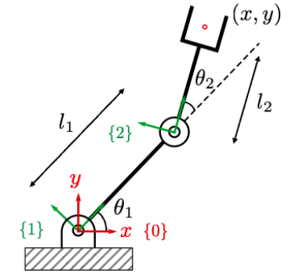
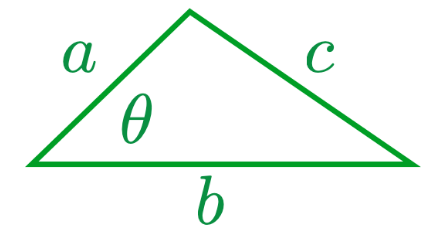
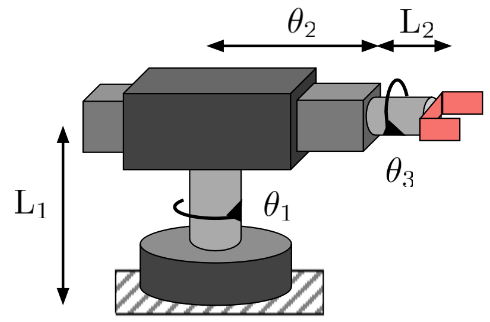
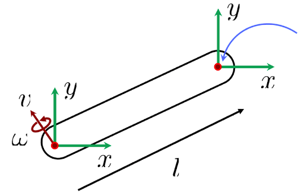
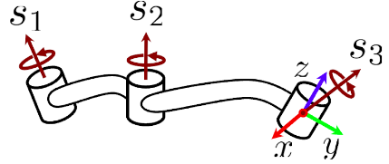

Review (Lectures 1, 3, 5, 7, 9)
Question 1.
[Forward kinematics] What is $x$ and $y$?

Question 2.
[Cosine law] What is $c^2$?

Question 3.
[Grubler’s Law] Select all correct statements:
$m (N-1) - \sum_{i=1}^J (m - f_i)$
All correct options were selected!
Question 4.
[Jacobian] Select the option with all correct pairs:
Question 5.
[SO(3)] What is the SO(3) for the rotation around the $z$-axis?
Question 6.
[so(3) to SO(3)] What is the correct equation to transform so(3) to SO(3)?
Question 7.
[Quartenion] What is the dimension of a quaternion and what is the correct expression?
Question 8.
[3D kinematics] Find the forward kinematics of a manipulator using SE(3):

Question 9.
[Velocity] What is the velocity of the point?

Question 10.
[Generalized velocity] What is the 6D velocity caused by $s_1$ and $s_2$? (Given $s_i$)
